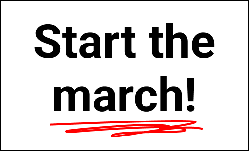

were-still-marching-proto/
index.html
assets/
thembeka.gif
thembeka.mp3
intro-poster.png <-- "Begin the march" poster (optional) <!doctype html>
  <html>

  <head>
    <meta charset="utf-8">
    <title>We're Still Marching - Prototype</title>
    <meta name="viewport" content="width=device-width, initial-scale=1.0, user-scalable=no" />
    <!-- A-Frame -->
    <script src="https://aframe.io/releases/1.4.0/aframe.min.js"></script>
    <!-- AR.js (A-Frame build) -->
    <script src="https://cdn.jsdelivr.net/gh/AR-js-org/AR.js@3.3.2/aframe/build/aframe-ar.min.js"></script>
    <style>
      body {
        margin: 0;
        font-family: Arial, sans-serif;
        background: #000;
        color: #fff;
      }

      #start-screen {
        position: fixed;
        inset: 0;
        display: flex;
        align-items: center;
        justify-content: center;
        background: rgba(0, 0, 0, 0.85);
        z-index: 9999;
        flex-direction: column;
      }

      #start-screen button {
        padding: 12px 22px;
        font-size: 18px;
        border-radius: 8px;
        border: none;
        background: #ff6b6b;
        color: #fff;
      }

      #hint {
        margin-top: 12px;
        font-size: 14px;
        color: #ddd;
        text-align: center;
        max-width: 320px;
      }
    </style>
  </head>

  <body>
    <!-- Start screen (must be tapped to allow audio) -->
    <div id="start-screen">
      <h2>We're Still Marching — Prototype</h2>
      <button id="start-button">Start the Experience</button>
      <div id="hint">Tap the button, then point your camera at the printed marker to begin.</div>
    </div>

    <!-- Hidden HTML image - ensures browser treats GIF as an HTML image (helps animation as texture) -->
    

    <a-scene embedded arjs="sourceType: webcam; debugUIEnabled: false;">
      <a-assets>
        <!-- keep the gif as an  asset too (A-Frame will reference it) -->
        
        
        
        <audio id="thembekaAudio" src="assets/thembeka.mp3" preload="auto"></audio>
      </a-assets>

      <!-- Intro marker (preset hiro) - the "Begin the march" poster -->
      <a-marker preset="hiro" id="marker-intro">
        <a-plane src="#introPoster" rotation="-90 0 0" width="1" height="0.8" position="0 0 0"></a-plane>
      </a-marker>

      <!-- Thembeka marker (use kanji preset for second marker) -->
      <a-marker preset="kanji" id="marker-thembeka">
        <!-- a-image uses the  asset - should animate -->
        <a-image id="thembekaPlane" src="#thembekaGif" rotation="-90 0 0" width="1.2" height="1.6" position="0 0 0"
          visible="false"></a-image>
      </a-marker>

      <a-entity camera></a-entity>
    </a-scene>

    <script>
      // Basic UX: hide start screen once user taps Start and allow audio/video actions
      const startBtn = document.querySelector('#start-button');
      const startScreen = document.querySelector('#start-screen');
      const thembekaAudio = document.querySelector('#thembekaAudio');
      const thembekaPlane = document.querySelector('#thembekaPlane');
      const markerThembeka = document.querySelector('#marker-thembeka');
      const markerIntro = document.querySelector('#marker-intro');

      startBtn.addEventListener('click', async () => {
        // attempt to warm up audio playback (some browsers need a user gesture before play)
        try { await thembekaAudio.play(); thembekaAudio.pause(); thembekaAudio.currentTime = 0; } catch (e) { /* ignore */ }
        startScreen.style.display = 'none';
      });

      // Play/pause audio when marker found/lost and toggle visibility
      markerThembeka.addEventListener('markerFound', () => {
        console.log('Thembeka marker found');
        thembekaPlane.setAttribute('visible', 'true');
        // try to play audio (must have had start gesture)
        thembekaAudio.play().catch(() => { console.log('Autoplay prevented'); });
      });
      markerThembeka.addEventListener('markerLost', () => {
        console.log('Thembeka marker lost');
        thembekaPlane.setAttribute('visible', 'false');
        thembekaAudio.pause();
        thembekaAudio.currentTime = 0;
      });

      // Optional: make intro poster disappear when intro marker is lost/found
      markerIntro.addEventListener('markerFound', () => {
        console.log('Intro marker found');
      });
    </script>
  </body>

  </html>
